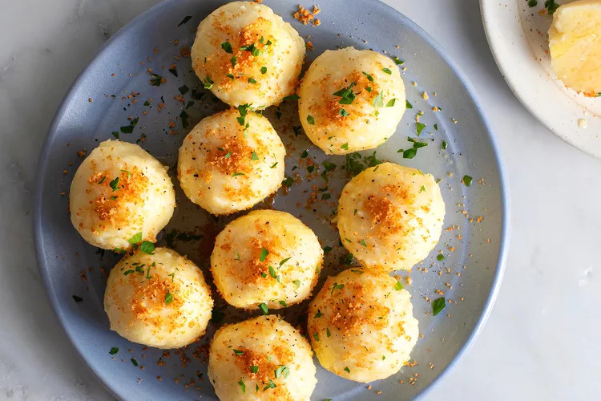

Bavarian Potato Dumplings

Description
Bavarian potato dumplings, also known as kartoffelklöße or kartoffelknödel, are unique spheres of seasoned potatoes and starch. There are many ways to
make classic German potato dumplings, including some using all or part raw potatoes, some using wheat flour, and some using part wheat flour and part
starch. This version contains cooked starchy (or floury) potatoes, potato starch, eggs, and simple seasonings. Potato dumplings are old-fashioned German comfort
food, often served with a Sunday roast and gravy or classic German rouladen or sauerbraten. They are also excellent served with creamy mushroom sauce or a hearty
beef stew.
Ingredients
- 1 kilogram starchy potatoes, such as russets
- 172 grams potato starch
- 1 1/2 teaspoons salt, or to taste, plus more for the cooking water
- 1/8 teaspoon ground nutmeg, preferably freshly grated
- 2 large eggs, lightly beaten
- 4 to 6 tablespoons melted butter
- Buttered breadcrumbs, freshly ground black pepper, and/or parsley, for garnish, optional
Steps
- Peel the potatoes and cut them into large chunks.
- Put the potatoes in a large saucepan, cover them with salted water, and bring them to a boil over high heat. Lower the heat to medium; cover the pan and cook for
about 20 to 25 minutes until the potatoes are tender. Drain well.
- Rice the potatoes and spread them out on a large baking sheet or waxed paper; let them cool for about 30 minutes or until completely cooled. You should have about
800 grams of riced potatoes.
- Bring a large pot of salted water to a boil.
- Meanwhile, prepare the potato dumpling dough. In a large mixing bowl, toss the cooled riced potatoes with the potato starch, 1 1/2 teaspoons of salt, and the nutmeg.
- Add the beaten eggs to the potato mixture and gently mix with your hands to form the dough. Avoid overmixing.
- Shape the dough into about 12 firm 5cm dumplings, about 85 grams each.
- With a slotted spoon, place the dumplings in the boiling water.
- When the dumplings float to the top, turn the heat to low, just enough to maintain a simmer. Cover the pan and continue to cook for 20 minutes. Make sure the water is not
at a rolling boil as it could cause the dumplings to fall apart.
- Remove the dumplings to a bowl; drizzle with melted butter, and sprinkle lightly with salt to taste.
- Serve potato dumplings with buttered breadcrumbs, freshly ground black pepper, and/or parsley, as desired.